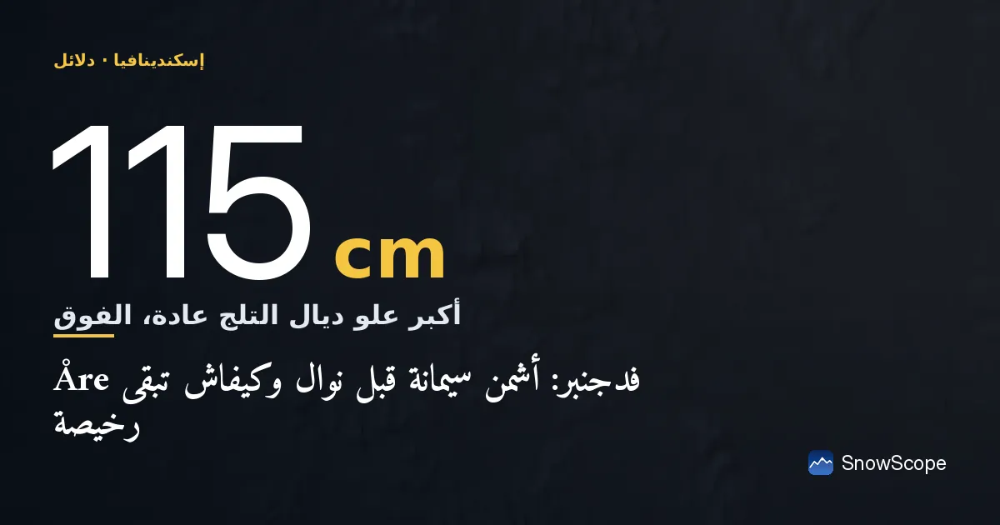
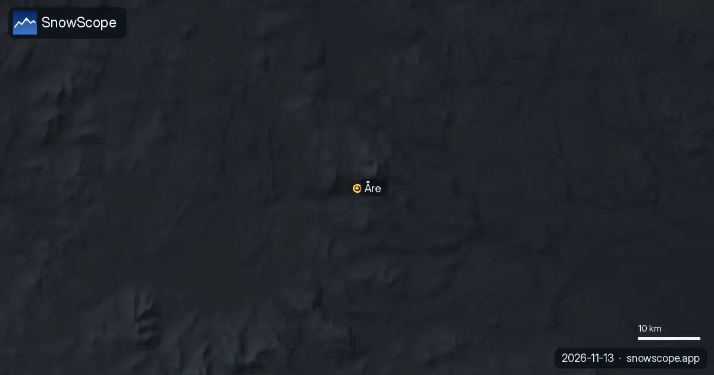

Åre فدجنبر: أشمن سيمانة قبل نوال وكيفاش تبقى رخيصة
Åre كتقع فـ علو فوق الجوج ديال Åresjön مع 116 كم من البيستات و 928 م من الارتفاع. التاريخ ديال التلج من 46 شتوة يوري نموذج واحد وضيح لشهر دجمبر: النص الثاني ديال الشهر يبني غطا كيين، لكن الأسبوع الأول هو حظ. نص الجبل (853 م) عندو التلج ديال جودة فقاط في 61% من دجمبر الأول، لكن 89% من الوقت بحال نص الشهر.
شوف توقعات التلج مباشرة ديال Åre فالتطبيق ديال SnowScopeالعلو ديال التلج، التنبيهات والخريطة 3D، فابور.
فين تروح: الأرقام
التلج فـ Åre فشهر دجمبر يزيد بشكل ستيدي فـ الشهر. فـ نص الجبل، نسبة ديال الشتوات اللي عندهم 30 سم ولا أكثر تزيد من 61% فـ 1-7 دجمبر، إلى 76% فـ 8-14 دجمبر، بعدين 89% فـ 15-21 دجمبر و تصل لـ 93% فـ سيمانة الكريسماس ديالها.
أحسن وقت باش تروح براس بزاف هو 15-21 دجمبر. تكون عندك فرص ديال التلج قرب الكريسماس بدون ما تدفع البلاصة ديال الفرق فـ التذاكر ديال الصعود والمبيت. التلج اللي تقليدي فـ 15 دجمبر يكون 40 سم فـ نص الجبل، وهاد الحاجة كتكفي باش تسكي فـ أغلب البيستات بشكل أمان.


الثمن: تذاكر الصعود والوقت
Åre كتستعمل البيع الديناميكي ديال التذاكر، اللي تتحدد حسب التاريخ من خلال المتجر الرسمي فـ الإنترنت. هاد الحاجة معناتها الأسابيع اللي فيهم سكات أقل تكون رخيصة من الأسابيع ديال الفرح. الأسبوع الأول ديال دجمبر والأيام اللي بين الكريسماس والسنة الجديدة هي الغالية أكثر؛ السيمانا ديال 15-21 دجمبر كتقعد فـ زونا أكثر هدية.
بوك الفندق وتذكرة الصعود مع بعضهم حول السيمانا اللي تخترت، وتاروح تاني. البيكار الأول فـ الإنترنت لـ الاثنين يعطيك أكثر كنترول فـ اللي غادي تصرف.
الارتفاع: التغيير أقل من اللي تفكر فيه
التضاريس ديال Åre كتمتد من 389 م إلى 1318 م، لكن التلج فـ دجمبر ما تبدلش بزاف فـ جميع الأرتفاعات مقارنة مع المحطات ديال الجبال الكبيرة. فـ 15 دجمبر اللي تقليدي، القاعدة عندها 34 سم، نص الجبل 40 سم والقمة 46 سم. الجهة الفوقانية فيها ريح أكثر، فالارتفاع الإضافي ما يعطيكش كتلج أعمق فـ الأرض بطريقة أكيدة.
اللي تبدل مع الوقت هو الموثوقية فـ القمة. المتوسط ديالها فـ دجمبر نزل من 69 سم فـ الشتوات من سنوات 80 و 90 لـ 36 سم فـ الشتوات الأخيرة. نص الجبل فقد فرص متشابهة: نسبة ديال سيمان الكريسماس اللي عندها 30 سم نزلت من 100% إلى 80%. القاعدة بقات ثابتة أكثر.
الموسم اللي فات والتغيير طول المدة
الموسم ديال 2025-26 جاب 40 سم فـ نص الجبل فـ 15 دجمبر و 33 سم فـ 24 دجمبر. هاد الحاجة كانت وسط ليك للسنين الأخيرة لكن أقل من وسط 46 شتوة ديال 49 سم فـ القمة فـ ليل الكريسماس. التلج اللي شحيح فـ أول الموسم هو حاجة شايعة دابا.
التلج ديال Åre فـ دجمبر كان يميل للخفة فـ آخر 15 شتوة مقارنة مع سنوات 80 و 90. السيمانا ديال الكريسماس فـ نص الجبل دابا عندها 30 سم فقاط فـ 80% من الشتوات، نزلت من 93% تاريخيا. تحضر نفسك باش تسكي فـ سيمانا تقليدية من نص الشهر، وما تتمناش التلج الطري الغميق.
خيارات أخرى: Vemdalsskalet وفاش تشوف مكان ثاني
Vemdalsskalet، أبعد شوية نحو الجنوب فـ Härjedalen، هي خيار أصغر وأهدا. التلج ديالها فـ دجمبر أقل غمق: 33 سم فـ نص الجبل فـ 15 دجمبر، و فقاط 63% من الشتوات تصل إلى 30 سم فـ السيمانا ديال 15-21 دجمبر. الأثمان ديالها كذاك ديناميكية وما عندها سعر ثابت منشور.
فـ دجمبر، Åre تعطيك التلج أكثر موثوقية و تضاريس أكثر بزاف بـ أثمان متقاربة. إذا بغيت تاكيد باش تسكي السيمانا الأولى من دجمبر، شوف نحو الشمال الغرب نحو الجبال الكبيرة ديال النرويج ولا السويد بدل. من يناير فصاعدا، Vemdalsskalet تصير خيار أحسن من حيث الثمن.
فـ الجبل: الريح، الضو والانهيارات
أيام دجمبر قصيرة. حطط السكي ديالك حول الضو اللي متوفر، وروح للبيستات اللي فـ التحت والمحمية من الريح فـ الأيام اللي فيها ريح. القمة معرضة؛ الهبات تقدر تمسح التلج من أعلى البيستات حتى لما نص الجبل يبان وليو.
قبل ما تروح بعيد عن البيستات المحددة، شوف آخر توقعات ديال الانهيارات من Lavinprognoser. التلج اللي جديد فـ أول الموسم يمكن يقعد ضعيف فـ اللي تحتيه.
نصايح للي كيتزلجو
- بوك السيمانا ديال 15-21 دجمبر: 89% من 46 شتوة اللي تاريخ عندهم 30 سم ولا أكثر فـ نص الجبل فـ هاد السيمانا، مقابل فقاط 61% فـ الأسبوع الأول.
- شرا تذاكر الصعود من الإنترنت وفـ وقت بعيد عن الفرح (1-7 دجمبر و 24-31 دجمبر). البيع الديناميقي يعطيك ثمن أحسن إذا بكرت تبوك فـ الأيام اللي فيها سكات قليل.
- توقع التلج حول 40 سم فـ نص الجبل فـ يوم تقليدي من نص دجمبر. القاعدة تاخد أقل، والقمة شوي أكثر، لكن الريح قادرة توقع هاد الفرق.
- فـ الأيام اللي فيها ريح قعد فـ التضاريس اللي فـ التحت والمحمية. القمة معرضة والتلج كيديري تديرها الريح.
- قرا نشرة الانهيارات ديال السويد قبل ما تسكي بعيد عن البيستات المحددة، خاصة فـ أول الموسم لما التلج الجديد يقعد فـ قاعدة ضعيفة.
على هاد الأرقام
العلو ديال التلج فالمحطات هو أكثر تلج فالجهة الفوقانية فالتاريخ المكتوب؛ هادو تقديرات لمنطقة، ماشي قياس فنقطة وحدة. التوقعات يمكن تتبدل. ديما شوف النشرة الرسمية ديال الانهيارات قبل ما تخرج من البيست.
النشرات الرسمية ديال الانهيارات: Lavinprognoser (Naturvårdsverket)
كيفاش تستاشهد بهاد المقال
للبحث، التعليم ولا الصحافة: الأرقام والرسومات تقدر تعاود تخدم بيهم بحرية تحت CC BY 4.0 مع هاد الاستشهاد.
SnowScope (2026), Åre فدجنبر: أشمن سيمانة قبل نوال وكيفاش تبقى رخيصة, https://snowscope.app/blog/ar/2026/11/are-december-skiing-sweden-price-snow.html, تشاف ف 2026-11-14
SnowScope (Atlas Labs). (2026, November 14). Åre فدجنبر: أشمن سيمانة قبل نوال وكيفاش تبقى رخيصة. SnowScope snow reports. https://snowscope.app/blog/ar/2026/11/are-december-skiing-sweden-price-snow.html
BibTeX
@misc{snowscope2026aredecemberskiingswedenp,
author = {{SnowScope (Atlas Labs)}},
title = {Åre فدجنبر: أشمن سيمانة قبل نوال وكيفاش تبقى رخيصة},
year = {2026},
month = nov,
howpublished = {\url{https://snowscope.app/blog/ar/2026/11/are-december-skiing-sweden-price-snow.html}},
note = {Published 2026-11-14 12:34 UTC; accessed 2026-11-14}
}· CC BY 4.0 · الطريقة، الداتا والأدوات →
Åre: التلج والحرارة حسب العلو، هاد الشتا مقارنة مع اللي فاتت (الأدوات) →
تابع Åre
فابور: ميساج ملي يجي التلج، والتوقعات كل صباح.